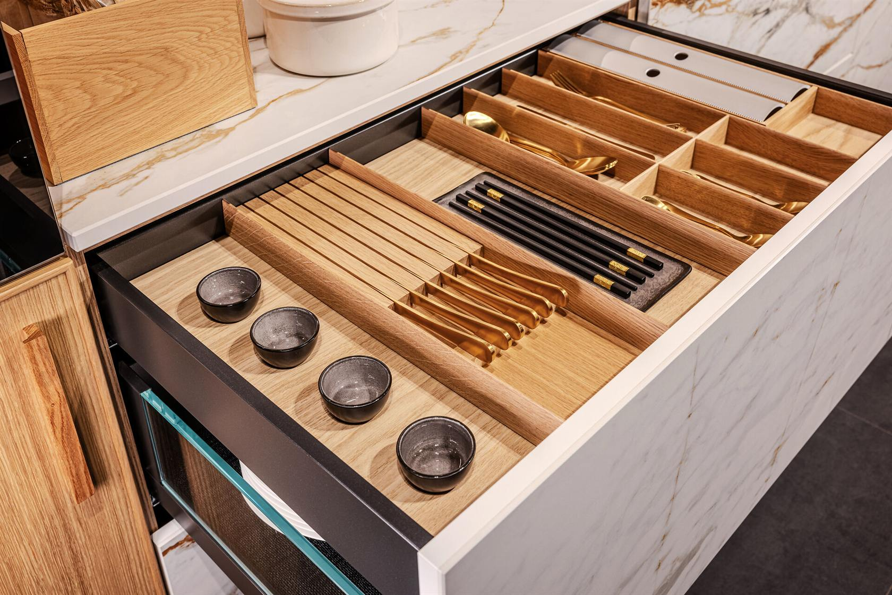

Atelier prémiových kuchyní · Praha
Prémiové kuchyně pro ženy. Ateliér v Praze.
Výhradní zastoupení SACHSENKÜCHEN v Česku. Německá manufaktura, návrh a poradenství v atelieru v Praze 10 — Vršovice.
02 · Řemeslo
Manufaktura, ne sériová výroba.
Každá kuchyně začíná výkresem. Vzniká na zakázku v rodinné manufaktuře v Saské Hartě — žádné meziproduktové sklady, žádné kompromisy.
Více než 30 let SACHSENKÜCHEN dělá to, čemu se v Německu říká „Manufakturqualität" — ručně dokončované hrany, materiály z udržitelných lesů a komponenty, které vydrží dvě generace. Ne pětileté „upgrade" cykly.
V dhouse atelieru poradíme s návrhem, dispozicí a materiálovým výběrem. Kuchyně vám projektujeme, montujeme a servisujeme. Když se rok po předání ozvete, zvedáme telefon stejní lidé.
Více o kvalitě →KÜCHEN
03 · Značka
Výhradní zastoupení SACHSENKÜCHEN v Česku.
German Design Award 2025 za Faceline Koncept — proporční systém, který přepisuje pravidla současného kuchyňského designu.
SACHSENKÜCHEN je rodinná manufaktura založená v Saské Hartě v roce 1992. Vyrábí prémiové kuchyně na zakázku pro evropské zákazníky, kteří hledají kvalitu, která přetrvá módu.
V Česku jsme jejich výhradní zástupce. To znamená: skutečné vzorky materiálů, návrh přímo s manufakturou, garanci a servis bez prostředníků.
sachsenkuechen.de →04 · Komponenty
Prémiové součásti.
Kuchyně je tak dobrá, jak dobré jsou její komponenty. Pracujeme se značkami, kterým věříme.
Desky z keramiky, kompaktního laminátu a přírodního kamene. Odolnost vůči teplotě, kyselinám a každodennímu opotřebení.
Více o AKP →Španělský výrobce s 95 letou tradicí. Indukční desky, vestavné trouby, digestoře — spolehlivá technologie pro denní vaření.
Více o TEKA →Německá značka založená 1875. Designové trouby, parní pečicí systémy a vinotéky. Pro kuchyně, kde detail dělá rozdíl.
Více o Küppersbusch →05 · Atelier
Praha 10 — Vršovice.
Kamenný showroom s vystavenými kuchyněmi, vzorky materiálů a místem pro klidnou konzultaci nad vaším projektem.
101 00 Praha 10 — Vršovice
06 · Recenze
Co o nás říkají.
Šest let, desítky realizovaných kuchyní. Tady jsou slova klientů, kterým jsme navrhli a předali jejich kuchyni.
Prvotřídní materiály i zákaznický servis. Vše šlo bez komplikací — od prvního setkání v atelieru až po předání hotové kuchyně. Helena Osyková · realizace 2024
Dokázali z velmi malých a úzkých prostor vykouzlit místo, kde se mi vaří radost. Cit pro detail a maximální využití každého centimetru. Renáta T. · byt 3+kk, Praha
Trpělivý přístup při projektování, dodržení termínů a péče po předání. Doporučuji každému, kdo hledá kuchyni na desítky let, ne na pět. Martin K. · rodinný dům
Tým, který rozumí materiálům i světlu v prostoru. Nezískala jsem jen kuchyni, ale srdce našeho bytu. Klára S. · loft Karlín
07 · Blog
Z atelieru.
Týdně píšeme o materiálech, návrhových principech a o tom, co dělá kuchyni opravdu prémiovou.
Pojďte do atelieru
Pojďme navrhnout vaši kuchyni.
Konzultace v atelieru je nezávazná. Přineste si půdorys, my máme materiály, vzorky a kávu.